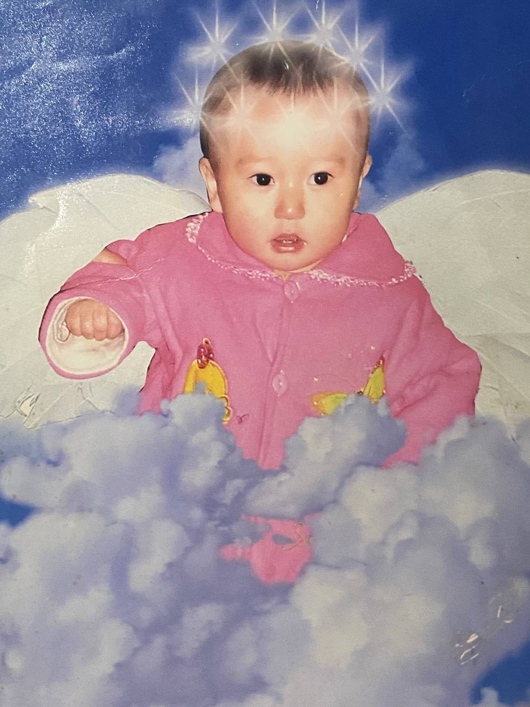
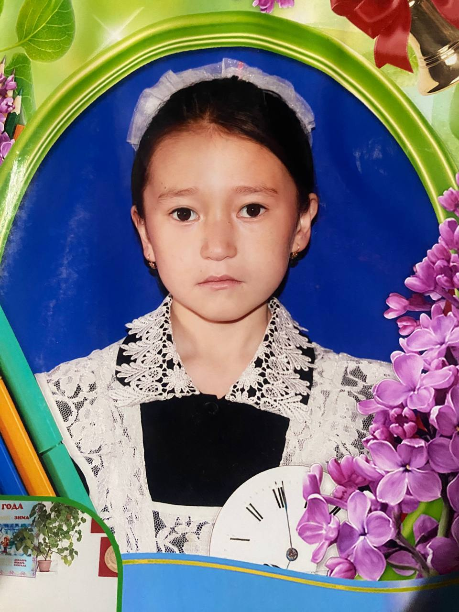
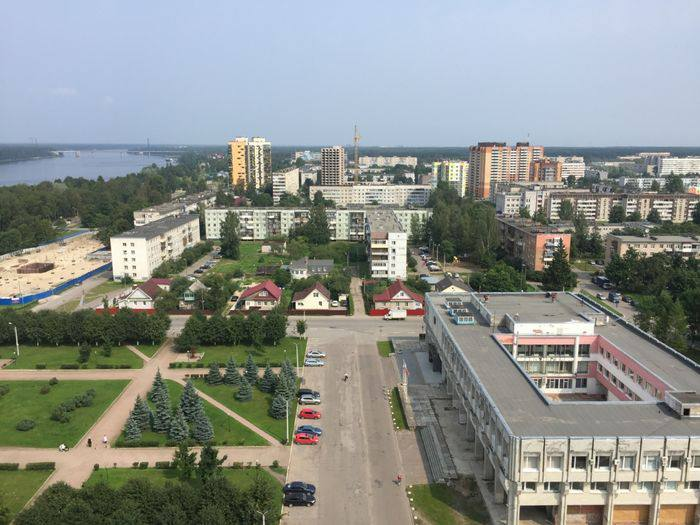
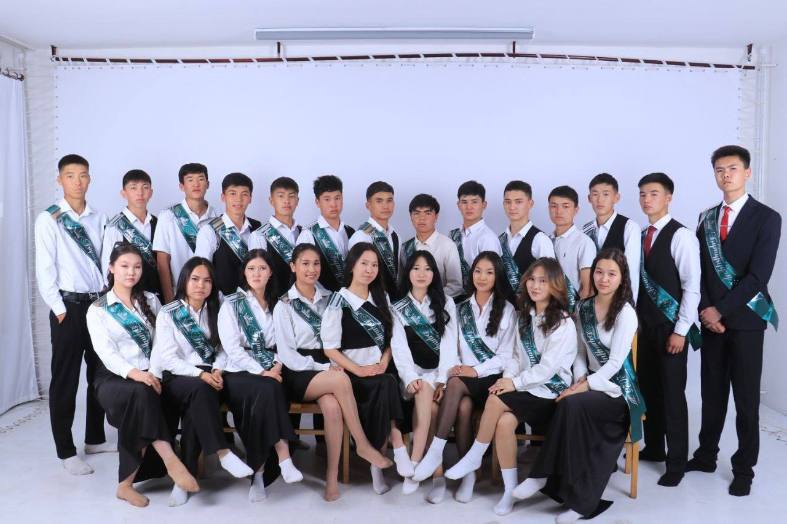

Обо мне
Я родилась в Иссык-Кульской области в городе Каракол 19 февраля 2007 года вторым ребенком. У нас в двое мальчика, и я-единственная девочка. Поэтому я росла в больше мальчишеской среде, что по-своему повлияло на мой характер.

Свои младшие классы я окончила в родном селе Кок-Добо. С самого детства меня привлекали точные науки, интерес к которым со временем только рос. Особенно мне нравилась математика, потому что любила решать задачи и находить логические решения.

9 класс я окончила и получила аттестат в России, в городе Кировск. Там я познакомилась с интересными людьми и именно тогда поняла, что хочу развиваться в техническом направлении. Этот этап стал для меня важным опытом и дал мотивацию двигаться дальше.

Окончила школу в 2025 году и прошла на бюджет сразу в два университета: один — по гуманитарному направлению, другой — по техническому. Я выбрала техническое направление, потому что именно в этой сфере вижу свое будущее и возможности для дальнейшего развития.

Сейчас я заканчиваю 1-курс политеха в направлении ИТУ-2-25. Постепенно развиваюсь в IT-сфере, осваиваю новые технологии и прокачиваю свои навыки. Среди профильных предметов у нас графический дизайн, информатика, веб-разработка, которые помогают мне развиваться в технической сфере и получать практические навыки.